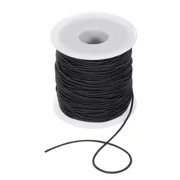

ϩⲱⲥ SBF, ϩⲱⲱⲥ, ϩⲟⲩⲥ S, ϩⲟⲥ B nn m, thread, cord: Ge 14 23 SB, Jos 2 18 S, Cant 4 3 S ϩⲱⲱⲥ (var ϩⲟⲩⲥ) F, Ez 40 3 B (HConst 288, var & S diff) σπαρτίον; Nu 15 38 B (S ⲧⲱⲧⲉ), Jud 16 9 S, Si 6 31 S κλῶσμα; Ez 47 3 SB μέτρον; P 44 95 S ⲡϩⲟⲩⲥ حيط; ShC 73 123 S ϩⲃⲥⲱ, ϩⲟⲩⲥ, ⲙⲟⲩⲥ, Mus 40 277 S ⲁⲩⲕⲧⲟ ⲉⲣⲟϥ ⲛⲟⲩϩ. ⲛϭⲟⲟⲩⲛⲉ (var better BAp 169 ϩⲟⲃⲥⲟⲩ ⲛⲟⲩϩⲱⲃⲥ ⲛϭ.); ϩ. ⲛⲕⲟⲕⲕⲟⲥ: Lev 14 6 S (B ϩ. ⲉⲧⲥⲁϯ) κλωστός; Ez 16 11 SB κάθεμα; Griff Stu 163 F ⲉⲃⲙⲏⲣ ⲙⲡⲓϩ. ⲛⲕⲟ. ⲉϫⲉⲛⲧⲉⲃⲙⲉⲥⲧⲛϩⲏⲧ; ⲕⲁⲡ ⲛϩ. v ⲕⲁⲡ 1°. Cf ? ϩⲓⲥⲉ spin.
(noun male)
thread, cord [σπαρτιον, κλωσμα]

complete
710a
See also:
Homonyms:
| view | ⲕⲁⲡ SB | (noun male) string of harp &c [χορδη]
thread, string, strand single hair letter of alphabet (ref to linear form)2861 |
| view | ϣϫⲱⲧ SB | (noun female) meaning uncertain, strip, cord (?)2049 |
| view | ϣⲗⲟⲡⲗⲡ S | (noun) meaning unknown, thread, cord (?)1904 |
| view | ⲗⲉⲃⲁⲛ SB ⲗⲁⲃⲱ B | (noun male) ship's hauling-cable945 |
| view | ⲙⲁⲛⲓⲛ, ⲙⲁⲗⲗⲓⲛ, ⲙⲁⲗⲓⲗ S | (noun) band, cord (?)1076 |
| view | ⲙⲁϣⲣⲧ S ⲙⲁϣⲉⲣⲧ SB | (noun male/female) cable of palm fibre1139 |
| view | ⲛⲟⲩϩ SALF ⲛⲁⲩϩ Sa ⲛⲱϩ S ⲛⲟϩ B ⲁⲛⲟⲩϩ, ⲁⲛⲛⲟⲩϩ F | (noun male) rope, cord [σχοινιον]
ship's cables acrobbat's tight rope1220 |
| view | ⲣⲓⲃⲏ, ⲣⲓⲃⲓ B | (noun female) rope with belt for hauling ship's cable1319 |
| view | ϣⲑⲱⲧ B | (noun female) rope of palm-fibre1872 |
Homonyms:
| view | ϩⲱⲥ SLB | (verb) intr: sing, make music [αδειν, υμνειν, αινειν]2280 |
| view | ϩⲱⲥ SA ϩⲉⲥ-, ϩⲱⲥ-, ϩⲟⲥ⸗ S ϩⲁⲥ⸗ A | (verb) intr: be blocked, filled, covered up [εμφρασσειν]
tr: [εμφρασσειν, χωματιζεσθαι]2281 |
| view | ϩⲱⲥ L | (noun) weakling, coward or sim2283 |
| view | ϩⲁⲥ S ϩⲟⲥ B ϩⲉⲥ F | (noun male) dung (of animals, birds), in recipes934 |